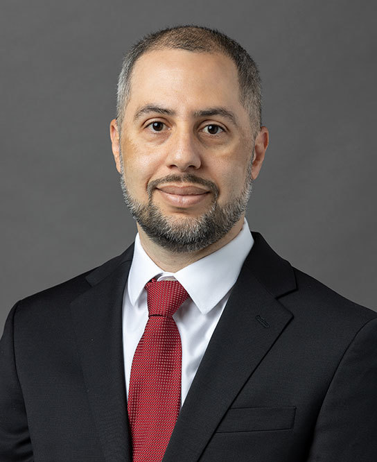

Independent corporate director and veteran operator with 25+ years of experience across Fortune 100 enterprise, regulated financial services, healthcare technology, private equity-backed companies, and venture-backed growth companies.
Ray is an independent corporate director with more than 25 years of experience across healthcare, financial services, venture-backed technology companies, and Fortune 100 enterprise, including building, scaling, governing, and exiting companies. He brings boards practical judgment on strategy, capital allocation, M&A, technology transformation, and AI oversight, informed by active board service, committee leadership, and four company exits.
His experience spans early-stage ventures to Fortune 100 enterprise, and regulated industries from financial services to healthcare, giving him the range to bridge immediate execution with long-term vision in the boardroom.

Ray currently serves on the board of Ascend Federal Credit Union, the largest credit union in middle Tennessee with nearly $5 billion in assets, where he chairs the Strategic Planning Committee and serves on the M&A Committee. At Ascend, he established and chaired the AI Governance Committee, and his work in AI board governance was featured in an interview with executive search firm Odgers Berndtson. That conversation highlighted the need for directors to maintain oversight of AI applications without hindering management's ability to compete in a market where AI is rapidly becoming a competitive differentiator.
He also serves on the Board of Trustees of Belmont University, where he chairs the Finance, Operations, and Investment Committee and serves on the Executive and Governance Committees. Belmont is a Nashville-based university with an annual budget of $500 million, total assets of nearly $1.85 billion, and nearly 9,000 students. Across his current fiduciary board roles, Ray provides oversight to institutions representing nearly $7 billion in combined assets. Additionally, Ray serves on the Board of Advisors for Montecito Medical, one of the nation's largest privately held companies specializing in acquiring and funding the development of medical real estate properties, with a portfolio valued at more than $7.5 billion across 40 states.
Ray also chairs Quokka Care, a healthcare technology company focused on remote patient monitoring; advises Seed Healthcare as a member of its investment committee; sits on the board of S3 Recycling Solutions; and serves on the board of Staffing as a Mission, a mission-driven staffing company he chaired from 2019 to 2025.
Ray's earlier governance work spans finance, healthcare, and the public sector. He served on the Board of Directors of The Community Foundation of Middle Tennessee from 2017 to 2023, on the Board of Directors of The Nashville Health Care Council from 2021 to 2024, and on the Board of Directors of the Center for Nonprofit Management from 2018 to 2024, an organization devoted to strengthening nonprofit governance. He was also one of two gubernatorial appointees to the State of Tennessee's Open Data Initiative.
Earlier service includes board roles with the Tennessee HIMSS Chapter, the Ordinary Hero Foundation, and Youth Life Learning Centers, and a chairman and co-founder role at Entoto Gear, a social-mission venture. Across these organizations Ray has served as chairman of several, as vice-chairman, and as chair or member of various governance, finance, and strategic planning committees.
Ray is the Chairman of SwitchPoint Ventures, an AI strategy and commercialization firm he co-founded and led as CEO from 2018 to 2026. He built the company from a bootstrapped startup into an AI venture studio, turning emerging technology into measurable enterprise value. Since its inception in 2018, the studio has achieved three realized exits within six years: Scout (5x return), Polaris (8x return), and Winnow (23x return), which was acquired by Aya Healthcare, the largest healthcare staffing company in the United States.
Before SwitchPoint, Ray was Chairman and CEO of WPC Healthcare, where he inherited a struggling professional services organization and executed a turnaround that produced 400% revenue growth in three years. He transitioned the company to a SaaS predictive analytics platform, orchestrated a management buyout, and facilitated its sale to Intermedix (4x return), later acquired by R1 RCM for $460 million.
Following the acquisition, Ray joined Intermedix as Senior Vice President of Strategy and then Senior Vice President of Analytics, leading a globally distributed analytics business unit.
His earlier career includes nearly a decade at Microsoft, where he was responsible for roughly half a billion dollars in revenue across expanding enterprise sales, strategy, and corporate-development roles, and negotiated individual enterprise agreements exceeding $100 million with one of the nation's largest healthcare systems. In Microsoft's Health Solutions Group, he identified and structured partnerships with other Fortune 500 companies. During the final five years of his tenure, Ray held a place in Microsoft's Exceptional Potential program, the company's renowned development track, reserved for the top one percent performers within the company. He carried that distinction across three successive roles, advancing on the program's accelerated promotion path each time.
While at Microsoft, Ray originated two landmark philanthropic partnerships for the Middle Tennessee community, directing millions of dollars of investment to local organizations. As a board member of the YMCA of Middle Tennessee, he led a technology grant to the organization, and the following year he brought Microsoft together with HCA Healthcare, one of the nation's largest healthcare systems, on a first-of-its-kind joint gift, announced by both companies' chief executives, to equip community agencies with technology.
Ray served in the U.S. Army from 1995 to 2000, earning the rank of Sergeant in only three years, and was repeatedly recognized as soldier of the month and quarter at company, battalion, and brigade levels, as well as runner-up for NCO of the year at the corps level. These distinctions earned him selective assignments, including support for a U.S. presidential visit overseas. He deployed to the Balkans as a network and information-systems lead for Task Force Hawk and Task Force Falcon, running multi-site communication networks for more than 700 users. That foundation of discipline and responsibility continues to shape how he navigates complex decisions in the boardroom and as an operator.
Ray has been named to the Nashville Business Journal's Power 100 in both 2024 and 2025, recognized among the most influential leaders in Nashville business and a forerunner of the city's AI ecosystem. He was also named Dealmaker of the Year in 2024. Earlier recognition includes a 40 Under 40 honor, a Healthcare Hero Award, selection to the 2018 All-Star Board, and a place on the Nashville Post's 2020 ‘In Charge’ list. Ray is a Senior Member of HIMSS.
Ray is a Nashville Health Care Council Fellow (Class of 2017) and holds a Diploma of Education from the Bethel Leadership Institute and an Associate of Science in Applied Management from Kaplan University.
Ray and his wife of over 30 years, Nakisha, reside in the Nashville area with their five daughters. They love to travel as a family, and Ray and Nakisha share a goal of visiting all seven continents together. Ray is fluent in English and Spanish.